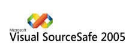
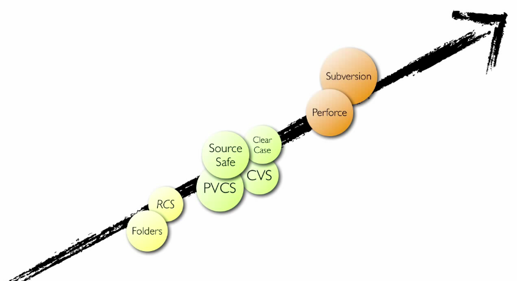

Algunas Cosas Antes de Comenzar
Conceptos:
- Repositorio
- Commit
- Branch
- Tag
- Merge
¿Que es un Sistema de
Control de Versiones?
Es una herramienta que registra todos los cambios hechos en uno o más proyectos
¿Que lo hace importante?
- Hacer rollback
- Es como un respaldo permanente
- Lo pueden usar:
- Desarrolladores
- Diseñadores Graficos
- Diseñadores Web
¿Que se hacía antes?
La Solucion, Un sistema de Control de Verisiones Local
Sistemas de control de versiones locales

Sistemas de control de versiones centralizados

Sistemas de control de versiones distribuidos

Algunos Sistemas de control de versiones
- CVS (concurrent versions system)
- RCS (revision control system)
- BitKeeper
- Microsoft Visual Source Safe 
SubVersion
- Se sigue la historia de los archivos y directorios a través de copias y renombrados
- La creación de ramas y etiquetas es una operación más eficiente
- Cuando se usa integrado a Apache permite utilizar todas las opciones que este servidor provee a la hora de autentificar archivos
- Permite selectivamente el bloqueo de archivos
Ventajas
- El manejo de cambio de nombres de archivos no es completo. Lo maneja como la suma de una operación de copia y una de borrado
- No resuelve el problema de aplicar repetidamente parches entre ramas, no facilita llevar la cuenta de qué cambios se han realizado. Esto se resuelve siendo cuidadoso con los mensajes de commit
Carencia
Sistemas de control de versiones
Contexto

Git es sistema de control de versiones distribuido, es Open source y esta diseñado para ser veloz y eficiente